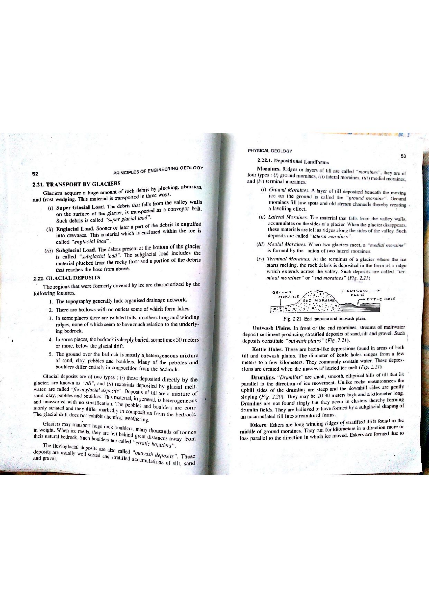

GGM - 2/2019 • Glacial Geology & Sedimentology
Q009: Genesis and Architecture of Glacial Moraines: Till Dynamics & Landforms
Glacial Deposition Dynamics & Moraine Architecture
A moraine is a distinctive landform constructed of till (or unstratified diamicton)—an unsorted, unstratified, polymictic accumulation of subangular to faceted rock debris ranging in size from microscopic pulverized rock flour to house-sized erratic boulders—deposited directly by the movement, melting, or standstill of a glacier. Moraines are diagnostic and exclusive landforms of the glacial environment.
"The loose rock waste, boulders, and pulverized clay transported and dumped directly by moving or melting glaciers is known as glacial till or boulder clay. The linear ridges and mounds formed by the accumulation of such unsorted glacial debris are called moraines. Depending upon their position relative to the glacier, they are classified as lateral, medial, terminal (end), recessional, and ground moraines."
— K.M. Bangar, Principles of Engineering Geology (Glacial Landforms & Moraines, p. 32)
Morphogenetically, moraines are classified into distinct structural categories based on their position relative to the ice body:
- Lateral Moraines: Prominent ridge-like embankments of debris deposited along the lateral margins of a valley glacier, supplied by freeze-thaw frost wedging and mass wasting of the flanking valley rock walls.
- Medial Moraines: A dark stripe or ridge of debris running down the center of a glacier trunk, formed where two lateral moraines coalesce at the confluence of two merging tributary valley glaciers.
- Terminal / End Moraines: A prominent, arcuate, transverse crescentic ridge dumped at the snout (terminus) of an advancing glacier, marking the maximum forward position attained by the ice front during a steady state (where rate of forward ice movement equals rate of ablation).
- Recessional Moraines: Transverse ridges deposited behind the terminal moraine during temporary standstills or minor readvances during overall glacial retreat.
- Ground Moraines (Till Plains): A widespread, blanket-like undulating sheet of subglacial lodgement till smeared across the bedrock floor beneath the melting glacier.
- Push Moraines: Subaerial ridges formed by the mechanical bulldozing and buckling of proglacial sediment sheets by a surging or readvancing ice lobe.

Figure 9.1: Morphogenetic Classification of Glacial Moraines (K.M. Bangar, p. 32). Perspective view of an alpine valley glacier showing lateral moraines along valley sides, a medial moraine at glacial junction, and terminal/end moraines dumped at the melting snout.

Figure 9.2: Glacial Depositional Environments & Sedimentary Architecture (Sam Boggs Jr., Fig. 8.32). Cross-sectional model illustrating lodgement till, ablation till, moraine ridges, outwash plains (sandurs), and kettle lakes.
Sedimentological Properties of Glacial Till vs. Fluvioglacial Drift
| Diagnostic Property | Glacial Till (Moraine) | Fluvioglacial Drift (Outwash / Esker) |
|---|---|---|
| Depositional Agent | Direct passive melting or lodgement from ice | Transport and deposition by glacial meltwater streams |
| Grain-Size Sorting | Extremely poorly sorted (Bimodal/Polymodal diamicton) | Moderately to well sorted (Gravels and sands) |
| Stratification / Bedding | Completely unstratified and structureless | Prominently cross-bedded, planar-bedded, laminated |
| Clast Morphology & Striations | Subangular, bullet-shaped, faceted, polished, striated clasts | Rounded to subrounded; striations erased by fluvial abrasion |
| Clast Fabric / Imbrication | Long axes ($a$-axis) aligned parallel to glacier flow direction | Upstream imbrication dipping against meltwater flow direction |
Official Question Statement — OPSC Assistant Geologist 2019 Paper-II (Question 9)
9. Moraines are formed in :
(A) Lacustrine Environment
Incorrect Distractor
Why this distractor is incorrect: A lacustrine environment represents a standing lake basin dominated by low-energy suspension settling of fine clay, horizontally laminated silt, varves, and small deltaic sand bodies. Moraine ridges composed of unstratified boulder till cannot form in lacustrine environments.
(B) Glacial Environment
Correct Verified Option
Why this option is correct: Moraines are constructed directly by glacial ice dumping, pushing, or plastering unsorted rock debris (till/diamicton) at the margins, snout, and bed of active or retreating glaciers. They are the quintessential depositional landform of glaciated terrains.
(C) Alluvial Environment
Incorrect Distractor
Why this distractor is incorrect: Alluvial environments are governed by running river water, characterized by sorted and stratified gravels, sands, point bars, natural levees, and floodplain silts. Running water sorts particles by hydraulic equivalence, preventing the formation of unsorted morainic till.
(D) Marine Environment
Incorrect Distractor
Why this distractor is incorrect: Marine environments produce fossiliferous, horizontally bedded sands, muds, and carbonates across shelf, slope, and abyssal plain settings. While floating icebergs can drop dropstones into glaciomarine muds, terrestrial moraine ridge complexes do not develop in marine environments.
Comprehensive Glacial Depositional Landform Assemblage
| Glacial Landform | Primary Material | Depositional Sub-environment | Morphological Diagnostic Features |
|---|---|---|---|
| Terminal Moraine | Unsorted Till (Diamicton) | Ice-contact / Glacial terminus | Crescentic transverse ridge marking maximum ice advance |
| Drumlin | Compacted Lodgement Till | Subglacial | Streamlined, teardrop-shaped hill with steep stoss and gentle lee |
| Esker | Stratified Sand and Gravel | Subglacial meltwater tunnel | Sinuous, snake-like winding ridge |
| Kame & Kame Terrace | Stratified Sand and Gravel | Ice-marginal meltwater delta/pond | Flat-topped mound or terrace flanking valley walls |
| Outwash Plain (Sandur) | Braided stream gravels and sands | Proglacial fluvioglacial zone | Broad, gently sloping stratified alluvial braidplain |
| Kettle Hole / Lake | Glaciolacustrine silt & peat | Moraine or outwash plain | Circular collapse depression formed by melting of buried stagnant ice |
High-Yield Practice Questions & Worked Derivations (8 Problems)
-
Practice Q1: What is the fundamental sedimentological and mechanical difference between "Lodgement Till" and "Ablation Till"?
✔ Correct Answer: Lodgement till is deposited subglacially under extreme ice overburden pressure (highly compacted, overconsolidated, fissile); ablation till is let down loosely during melting (uncompacted, washed).Explanation: Lodgement till is plastered onto bedrock beneath moving ice, resulting in very high dry density and preferential clast orientation parallel to ice flow. Ablation till is released supraglacially as ice melts, lacking overconsolidation.
-
Practice Q2: How does a Drumlin differ from a Roche Moutonnée in both origin and slope orientation?
✔ Correct Answer: A drumlin is a depositional till mound (steep stoss facing up-ice, gentle lee pointing down-ice); a roche moutonnée is an erosional bedrock knob (gentle abraded stoss facing up-ice, steep plucked lee pointing down-ice).Explanation: Drumlins streamline with their tails pointing down-glacier. Roches moutonnées have a gentle, striated stoss side polished by abrasion, and a jagged, steep lee side plucked by freeze-thaw quarrying.
-
Practice Q3: What are "striations" and "chattermarks", and what vital paleogeographic information do they provide?
✔ Correct Answer: Linear scratches and crescentic gouges carved into bedrock by rock fragments dragged by glacier ice; they record the exact direction of ancient ice movement.Explanation: The orientation of parallel striations gives the ice-flow axis, while crescentic fractures (chattermarks) convex down-ice reveal the absolute flow direction.
-
Practice Q4: In Quaternary stratigraphy, how are Terminal Moraines used to reconstruct ancient Pleistocene ice sheet margins?
✔ Correct Answer: They delineate the maximum extent of continental ice sheets during major glacial stadials (e.g., the Last Glacial Maximum).Explanation: Long, continuous terminal moraine ridges across North America and Europe mark the equilibrium limit of the Laurentide and Fennoscandian ice sheets during the Wisconsinan/Würm glaciation.
-
Practice Q5: What is a "glacial erratic"?
✔ Correct Answer: A boulder or rock fragment transported by a glacier and deposited on bedrock of completely different lithological composition.Explanation: Erratics can be traced back to their source pluton or outcrop (provenance studies), allowing geologists to map regional ice transport trajectories.
-
Practice Q6: In geotechnical engineering, why does lodgement till make an exceptionally stable foundation for heavy structures, whereas ablation till presents settlement hazards?
✔ Correct Answer: Lodgement till has been heavily preconsolidated under thousands of meters of ice overburden pressure, yielding high shear strength and low compressibility.Explanation: Glacial loading acted as a massive natural pre-loading mechanism, giving lodgement till high bearing capacity ($>400 - 800\text{ kPa}$).
-
Practice Q7: What is an "Esker", and how is it recognized in the field?
✔ Correct Answer: A long, narrow, sinuous, steep-sided ridge composed of stratified sand and gravel deposited by a subglacial meltwater river tunnel.Explanation: When the surrounding ice melts away, the gravel and sand deposited in the ice tunnel are left standing as a snake-like ridge, often running for tens of kilometers across the landscape.
-
Practice Q8: What is a "push moraine", and what glaciological condition does it diagnose?
✔ Correct Answer: A ridge produced by tectonic-like thrusting and folding of proglacial sediment by a surging or readvancing glacier snout.Explanation: Readvancing glaciers act as bulldozers, compressively deforming and stacking un-thawed proglacial sediments into imbricate thrust sheets.